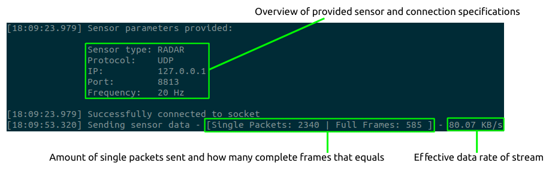

Table of Contents
Description
The NVIDIA® DriveWorks Sensor simulator produces data streams for various sensor types.This functionality can be used for:
- Understanding/Experimenting with the provided sample plugin implementations (see Lidar Plugin Sample, Radar Plugin Sample)
- Testing and debugging durig development of custom sensor plugin implementations if actual sensor is not available/accessible.
The sensor simulator provides an easily adaptable implementation for mimicking any data stream of a supported sensor's communication protocol.
Supported sensors
At the moment the following sensor/protocol combinations are supported.
| Sensor | UDP | TCP |
|---|---|---|
| LIDAR | x | x |
| RADAR | x | x |
Running the Tool
Run this tool by executing:
./sensor_simulator --sensor-type=[ radar | lidar ]
--protocol=[ udp | tcp ]
--ip=XXX.XXX.XXX.XXX
--port= [1024...65535]
[--frequency= [1 - 100 Hz]]
Parameters
--sensor-type=[ radar | lidar ]
Description: The type of sensor stream that should be simulated.
--protocol=[ udp | tcp ]
Description: The protocol to be used for data transmission.
--ip=XXX.XXX.XXX.XXX
Description: The ip to stream to.
--port=[1 - 65535]
Description: The port to stream to.
--frequency=[1 - 100] in Hz (default is 20)
Description: The frequency at which the data should be streamed. (e.g. 20 Hz for a lidar stream, would mean 20 full scans per second)
The command line syntax can also be seen when running the sensor_simulator with the "help" flag.
./sensor_simulator --help
Example: Invoke a radar stream running at 20 Hz to 127.0.0.1 on port 8813 using UDP
./sensor_simulator --sensor-type radar --protocol UDP --ip 127.0.0.1 --port 8813 --frequency 20
Command line output
Taken the example command from above:
./sensor_simulator --sensor-type radar --protocol UDP --ip 127.0.0.1 --port 8813 --frequency 20
one would get the following output:

Using The Provided Sample Plugins
The DriveWorks SDK comes with matching plugin implementations for the supported sensors (see above) that can be used as templates/guidance for one's own custom sensor implementation. Their code is available in the samples folder.
NV Radar Plugin
The details of the radar the sensor simulator mimicks, can be looked up in the section addressing the implementation of the radar plugin provided. (see Radar Plugin Sample)
The plugin supports both protocols, UDP and TCP and can be used in combination with the sample application called sample_radar_replay (see Radar Replay Sample) to visualize the data streamed by the sensor simulator.
In order to visualize the radar data coming from the sensor simulator, one follows these steps:
1. Start sensor simulator with the following parameters:
./sensor_simulator --sensor-type radar --protocol UDP --ip 127.0.0.1 --port 8813 --frequency 20
2. Start the sample application used for radar visualization called sample_radar_replay:
./sample_radar_replay --protocol=radar.custom --params=device=CUSTOMEX,ip=127.0.0.1,port=8813,protocol=udp,decoder-path=../../bin/libsample_radar_plugin.so
One should see the following visualization pop up:

NOTE: The plugin can be used for live-replay of the simulated data stream, recording of the simulated data stream and replay of recorded data (see details at Radar Plugin Sample) as a plugin for an actual sensor would be required to be able to.
NV Lidar Plugin
The details of the lidar the sensor simulator mimicks, can be looked up in the section addressing the implementation of the lidar plugin provided. (see Lidar Plugin Sample)
The plugin supports both protocols, UDP and TCP and can be used in combination with the sample application called sample_lidar_replay (see Lidar Replay Sample) to visualize the data streamed by the sensor simulator.
In order to visualize the lidar data coming from the sensor simulator, one follows these steps:
1. Start sensor simulator with the following parameters:
./sensor_simulator --sensor-type lidar --protocol UDP --ip 127.0.0.1 --port 8813 --frequency 20
2. Start the sample application used for lidar visualization called sample_lidar_replay:
./sample_lidar_replay --protocol=lidar.custom --params=device=CUSTOMEX,ip=127.0.0.1,port=8813,protocol=udp,scan-frequency=20,decoder-path=../../bin/libsample_nv_lidar_plugin.so
One should see the following visualization pop up:

NOTE: The plugin can be used for live-replay of the simulated data stream, recording of the simulated data stream and replay of recorded data (see details at Lidar Plugin Sample) as a plugin for an actual sensor would be required to be able to.